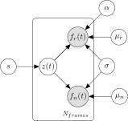

There are several approaches for dealing with neuropil contamination, the most common involve subtracting the surrounding neuropil fluorescence from each ROI with a scale factor determined by linear regression or hand-picked manually.
We fit both ROI and surround fluorescence to asymmetric Student-t (ASt) distributions, whose mean was determined by a common neuropil signal contributing to both ROI and surrounding fluorescence:
\[\begin{align} f_r(t) &\sim \mathrm{ASt}(\alpha z(t) + \mu_r, \sigma^2) \\ f_n(t) &\sim \mathrm{ASt}(z(t) + \mu_n, \sigma^2 / N) \\ z(t) &\sim \mathcal{N}(0, s^2) \end{align}\]
Here, \(z(t)\) is the time-varying neuropil trace, \(\alpha\) is the contamination coefficient (constrained between 0 and 1 for the ROI and fixed to 1 for the surround), and \(\sigma^2\) determines the scale of the two distributions.
The factor \(N\) corresponds to the ratio of the areas of surround and ROI masks. The ASt distribution has different degrees of freedom \(\nu_1\) and \(\nu_2\) for its left and right tails. We set \(\nu_1=30\) and \(\nu_2=1\), such that the left tail was approximately Gaussian, while the right tail resembled the Cauchy distribution. Thus the model allows for large positive but not negative deviations, consistent with the nature of calcium fluorescence signals.
The following figure represents the corresponding probabilistic graphical model, gray nodes indicating observed variables and white nodes latent variables.

The advantage of this approach over other methods, lies in the use of the ASt distribution to model deviations in both ROI and surround signals. The long right tail of the ASt distribution helps prevent over-estimating the neuropil component for densely active cells. At the same time, the use of the ASt distribution for the surround signal helps account for transient increases in fluorescence arising from unannotated neurites or cell bodies, which could otherwise result in false negative transients in the corrected trace.
The challenge of fitting this model is that the posterior distributions over model parameters, including the neuropil trace \(z(t)\), cannot be computed exactly. Instead, we use the black-box stochastic variational inference (BBSVI) with reparametrization gradients to fit an approximate posterior distribution.
The neuropil corrected fluorescence trace will then be estimated as the “noise” of the ASt model:
\[f(t) = f_r(t)- \hat{\alpha} \hat{z}(t)\]
where \(\hat{\alpha}\) and \(\hat{z}(t)\) are point estimates derived from the approximate posterior distribution, e.g. its mean.
The ASt model is not limited to finding common contaminating signals in two traces. In principle, we could split the neuropil donut into multiple sectors and provide a trace for each one of them. fit_ast_model can also correct for baseline drift as a part of the neuropil estimation procedure.